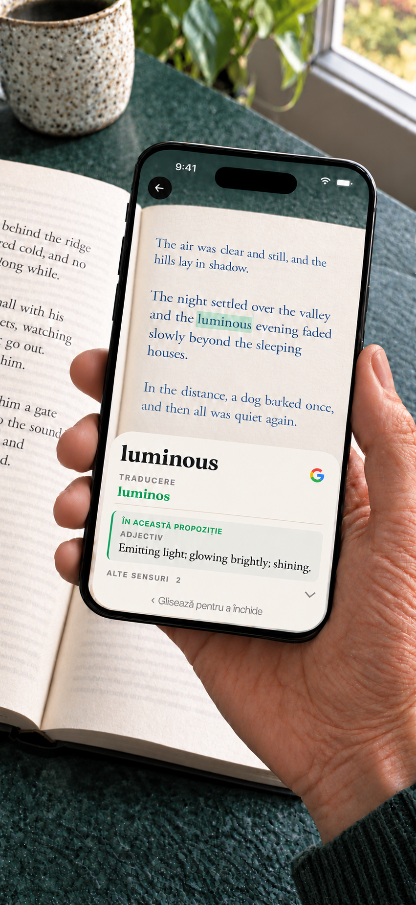

Booktionary · iPhone
Dicționar cu camera pentru cărți tipărite
Un cuvânt necunoscut nu ar trebui să te scoată din poveste. Îndreaptă camera iPhone-ului spre cuvânt, află sensul și continuă lectura. Fără să tastezi.
Pentru iPhone cu iOS 17 sau ulterior. · $1.99 USD

Bine de știut
Alege limba cărții, îndreaptă camera spre un cuvânt și așteaptă o clipă. Glisează definiția pentru a continua. Dicționarul românesc folosește Romanian WordNet de la RACAI. Acoperirea variază în funcție de cuvânt și formă. Ai nevoie de internet pentru a consulta și descărca resursele. Ține apăsat un cuvânt dintr-o definiție pentru a-l căuta în dicționar, a-l copia sau a-l căuta pe Google. Apoi poți reveni la intrarea inițială. Poți căuta pe Google și un cuvânt scanat.
Descarcă o dată. Citește offline.
Dicționarul de engleză este inclus. Descarcă celelalte dicționare și traduceri de cuvinte de care ai nevoie. Resursele instalate funcționează offline. Nu ai nevoie de cont. Căutarea Google este opțională, deschide browserul și necesită internet. Textul căutat este trimis la Google doar când alegi această acțiune. Imaginile camerei rămân pe iPhone.
O singură achiziție include toate dicționarele și pachetele de traducere a cuvintelor disponibile. Fără abonament sau achiziții în aplicație.
Sensul potrivit în propoziție
Cuvintele pot avea mai multe sensuri. Pe dispozitivele compatibile, Booktionary folosește textul din jur pentru a ajuta la afișarea mai întâi a sensului relevant din dicționar. Poți consulta și celelalte sensuri.
Ajutor pentru cărțile în engleză
Adaugă traduceri în română ale cuvintelor lângă definițiile în engleză. Traducerea definițiilor este disponibilă pentru alte limbi acceptate; pentru română, definițiile rămân deocamdată în engleză.

Dicționare pentru cărți în 24 de limbi
Cehă, chineză (scriere simplificată și tradițională), coreeană, curdă (kurmanji, alfabet latin), daneză, engleză, franceză, germană, indoneziană, italiană, japoneză, malaieză (rumi), neerlandeză, norvegiană bokmål, polonă, portugheză, română, rusă, spaniolă, suedeză, thailandeză, turcă, ucraineană și vietnameză.
Cuvintele englezești pot fi traduse în celelalte limbi din listă, precum și în greacă. Citirea cărților în greacă nu este acceptată. Curda acoperă kurmanji în alfabet latin, nu sorani; malaieza acoperă rumi, nu jawi. Tradu în engleză cuvinte din toate cele 23 de limbi de cărți acceptate, altele decât engleza. Definițiile în engleză sunt opționale acolo unde sunt disponibile modele de traducere compatibile.
- EnglishInclus
- FrançaisDe descărcat
- EspañolDe descărcat
- PortuguêsDe descărcat
- ItalianoDe descărcat
- DeutschDe descărcat
- DanskDe descărcat
- NederlandsDe descărcat
- Norsk (bokmål)De descărcat
- РусскийDe descărcat
- SvenskaDe descărcat
- PolskiDe descărcat
- ČeštinaDe descărcat
- 日本語De descărcat
- ไทยDe descărcat
- RomânăDe descărcat
- Tiếng ViệtDe descărcat
- TürkçeDe descărcat
- Bahasa IndonesiaDe descărcat
- 中文 · 简体 / 繁體De descărcat
- 한국어De descărcat
- УкраїнськаDe descărcat
- Kurdî (Kurmancî)De descărcat
- Bahasa MelayuDe descărcat
Asistență
Caută rapid cuvinte citind